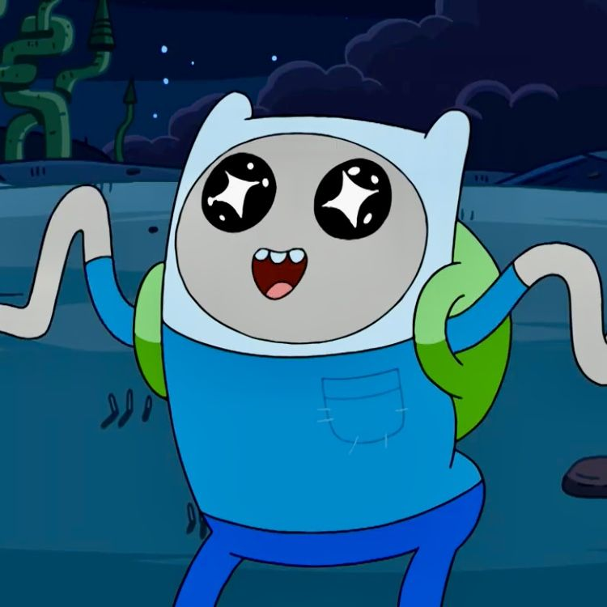
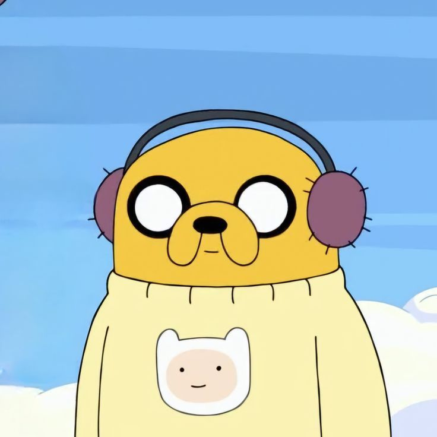
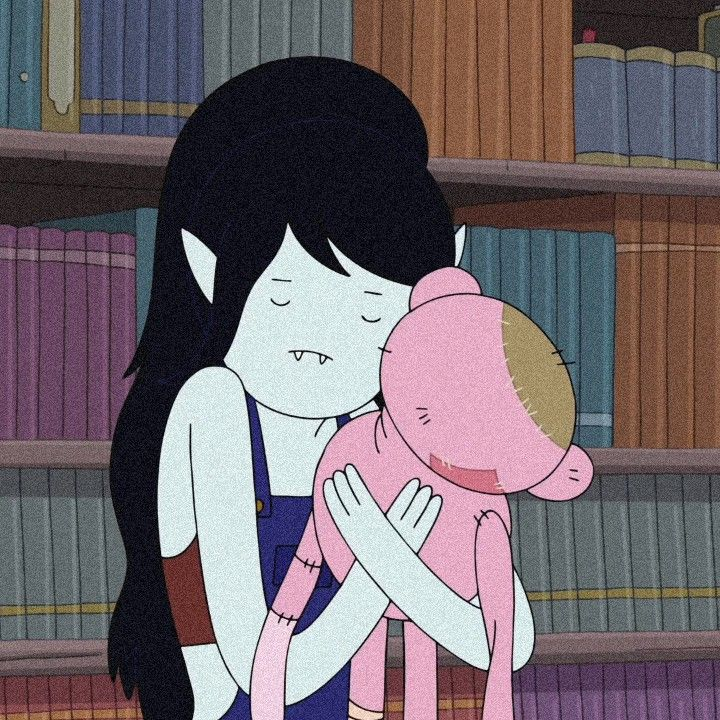
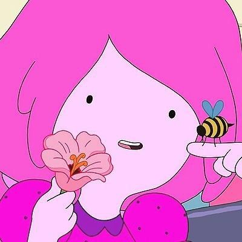
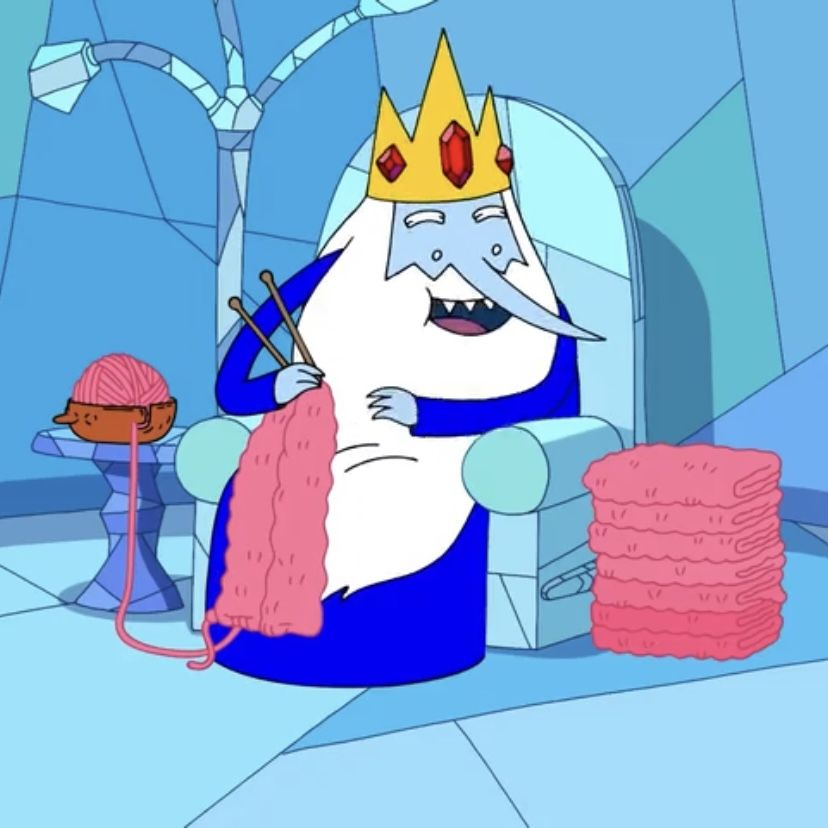
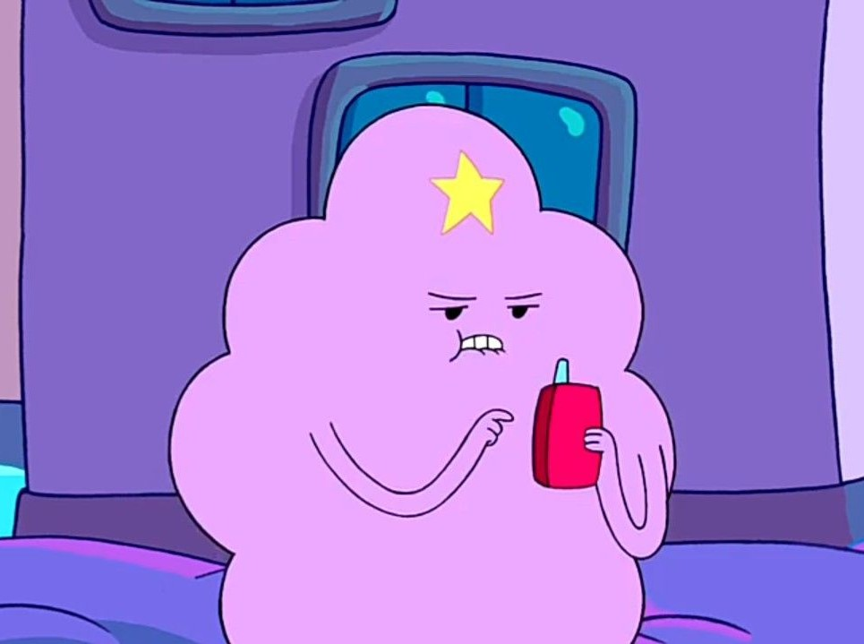
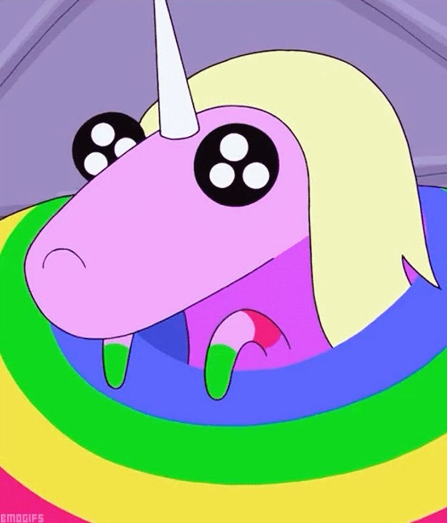

Finn
El último humano conocido, es un héroe valiente, leal y con un fuerte sentido de la justicia que busca
ayudar a los necesitados.

Jake
Cambiaformas con "Poderes Elásticos" que le permiten manipular su tamaño y forma. Es relajado, bromista y
padre de cinco cachorros con Lady Arcoíris.

Marceline
Una vampiro amante de la música, rockera, que toca el bajo y tiene más de mil años.

BMO
La consola de videojuegos portátil de Finn y Jake, que también actúa como cámara y amigo, encarnando la
inocencia y el optimismo.

La dulce princesa
Líder del Dulce Reino, una científica brillante y compleja que a veces toma decisiones moralmente ambiguas
por el bien de su reino.

Rey Helado
Antagonista recurrente que secuestra princesas debido a su soledad y a la locura provocada por su corona
mágica.

Princesa grumosa
Con una ersonalidad adolescente, mimada, dramática y sarcástica la Princesa del espacio grumoso.

Arcoiris
Es conocida por su cuerpo largo y colorido, volar, cambiar colores con su cuerno y hablar coreano. Madre
de cinco cachorros, vive en el Reino de Chuchelandia.